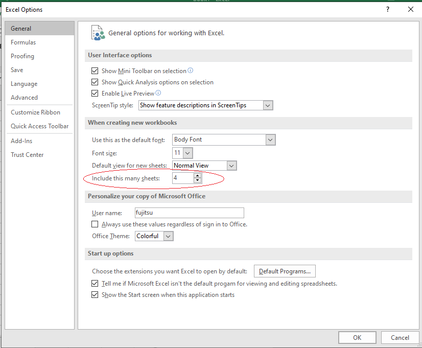
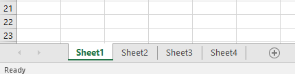

Modificaţi numărul de foi de calcul: (ovalul rosu)
Modificaţi numărul de foi de calcul: (ovalul rosu) ----> 


- se va utiliza font Book Antiqua, dimensiune 12,
culoare albastru ; - fundalul tabelului va avea
culoarea galben ; - aplicaţi tabelului un chenar de
culoare rosie , stilul liniei continuă dublă, pentru partea exterioară şi deculoare verde , stilul liniei continuă simplă, pentru partea interioară; - redenumiţi foaia de calcul Sheet1 cu numele STAT1;
- calculaţi media pentru fiecare student;
- câmpul Bursa se va completa selectiv, în funcţie de valoarea corespondentă din câmpul Media conform relaţiei: dacă media>=9 atunci "Bursa este de 1200 lei", altfel "nu se acordă";
-
pentru studenţii care primesc bursă aplicaţi un format condiţional astfel încât valorile care respectă condiţia să fie scrise cursiv cu
culoarea verde ; - în foia de calcul 4 să se ducă doar studenţii de la finanţe şi cei de la contabilitate şi să se reprezinte grafic media acesor studenţi;
-
sortaţi baza de date descrescător după Media şi alfabetic după câmpul Student;
Data -> Sort - obţineţi media pentru fiecare secţie şi cumulate la nivel de facultate;
-
să se caute în baza de date studenţii al căror nume începe cu litera C;
Data -> Filter -> AutoFilter - să se afişeze câţi elevi nu primesc bursă de la secţia contabilitate;
-
copiaţi baza de date STUDENT în foile de calcul Sheet2, Sheet3;
Edit -> Move or Copy Sheet… - redenumiţi foaia de calcul Sheet2 cu numele STAT2, Sheet3 cu numele STAT3
-
în foaia de calcul STAT2:
- sortaţi alfabetic după câmpul Secţia drept criteriu principal şi câmpul Media criteriu secundar;
-
în foaia de calcul STAT3:
- sortaţi descrescător după câmpul Media drept criteriu principal şi câmpul Student criteriu secundar;
- filtraţi baza de date pentru studenţii cu Media >=9